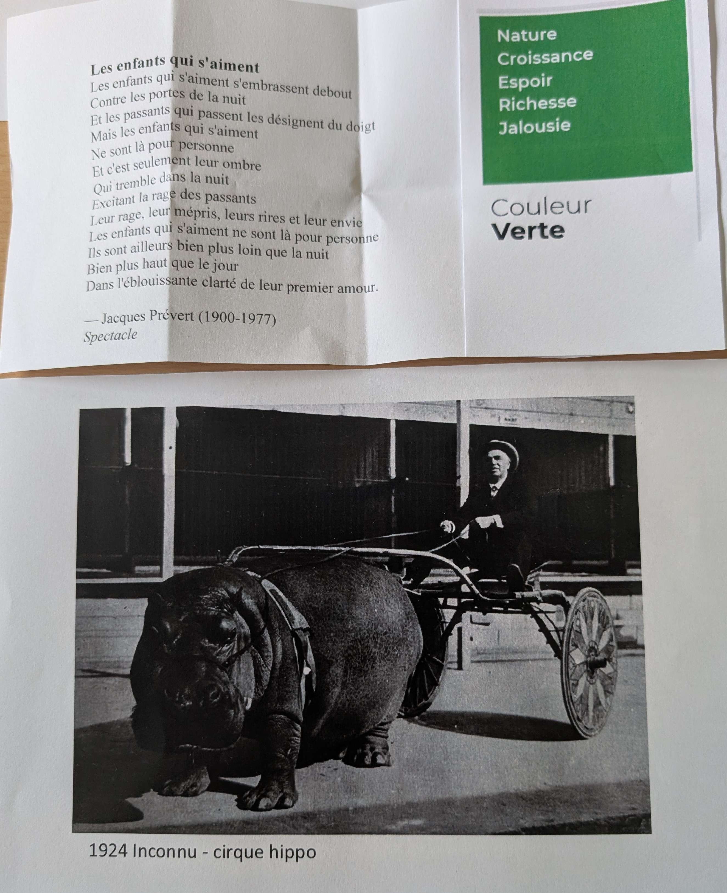
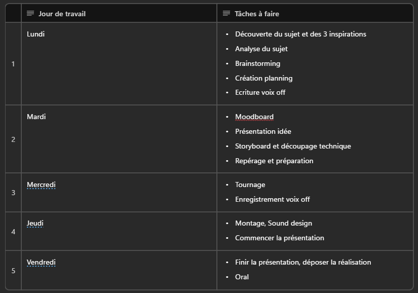

Le Monde était Vert
Contexte
Réalisation d'une vidéo avec contrainte de 3 éléments d'inspiration tirés au sort.
- La couleur verte
- Le poème "Les enfants qui s'aiment" de Jacques Prévert
- La photo "Cirque Hippo" de 1924

Compétences mobilisées
Scénarisation, voix off, recherches de médias, captation vidéo, effets vidéos.
Mise en place d'un réflexion pour justifier la création et l'argumenter devant un jury lors d'une présentation avec support diaporama.
Le projet en détail
Le Synopsis :
Une voix douce s'élève sur des images calmes : les bords d'un lac, des cygnes, l'herbe verte qui tremble. On entre dans le monde de l'enfance - celui où tout semble possible, où le cirque fait rêver, où la couleur du monde est encore verte et vivante.
La vidéo suit le fil de cette innocence : des enfants qui jouent, des animaux, la lumière filtrée par les arbres. La musique est légère, presque naïve. La voix off dit ce qu'on ressent quand on est petit — la certitude que la vie sera belle, que l'amour dure toujours, que la nature nous protège.
Puis, sans rupture brutale, quelque chose change. Les images se font plus sombres, plus vides. La voix off glisse vers le constat : la réalité s'impose, le temps passe, l'innocence ne revient pas. La jalousie des autres s'installe de plus en plus.
La vidéo se termine sur une dernière image de vert — une façon de dire que quelque chose reste, malgré tout.
Durée : 2 minutes. Format paysage. Voix off.
Le Planning :
